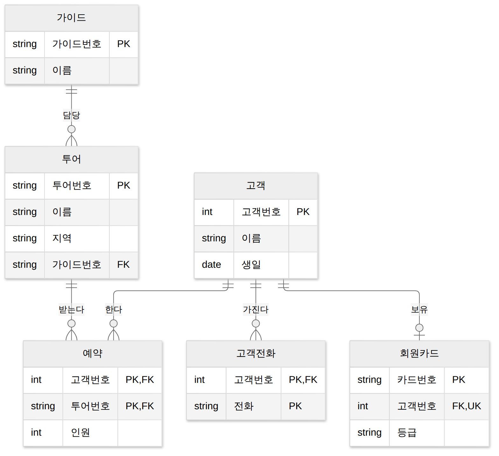

D049 · 길벗투어 E-R 그림을 표로 옮기는 법 — 계층·네트워크·관계형, 논리 설계 단계, 변환 규칙, 품질 검증
B3 어제 D047에서 길벗투어의 업무를 E-R 그림 한 장으로 그렸어요. 그림은 회의실 화이트보드에 붙어 있어도 되지만, DB는 그림을 읽지 못해요. 오늘은 그 그림을 DBMS가 알아듣는 표로 옮기는 날이에요. 그림은 아무 벽에나 걸 수 있지만 표 건물은 DBMS가 문을 열어 줘야 서 있을 수 있어요 — 그래서 이 단계부터는 “어떤 DBMS(어떤 데이터 모델)로 갈 거냐”가 먼저 정해져야 해요. 데이터 모델링 · 설계 단계 묶음은 최근 20회 시험에 20회 모두 나온 2과목 단골이에요.
- 계층형(트리 · 1:N만) · 네트워크형(그래프 · 오너–멤버 · CODASYL DBTG · N:M) · 관계형(표 · 키)을 관계 표현 방식으로 구별하고, 관계형이 등장한 이유를 말한다
- 논리적 설계(데이터 모델링)의 작업 넷을 개념 · 물리 설계의 작업과 가르고, ‘레코드 집중 분석’이 물리 설계임을 가려낸다
- E-R → 관계 스키마 변환 규칙(개체 · 1:N · M:N · 다중값 속성 · 1:1)을 길벗투어 그림에 적용해 CREATE TABLE까지 옮긴다
- 논리 데이터 모델 품질 기준 여섯 개를 뜻과 짝짓고, 체크리스트 리뷰로 모델을 검증하는 흐름을 설명한다
0. 오늘의 지도 — 그림이 표가 되는 칸
D046에서 본 DB 설계 5단계(요구 분석 → 개념적 설계 → 논리적 설계 → 물리적 설계 → 구현) 가운데 오늘은 세 번째 칸을 크게 확대해요. 이 칸에는 입력(E-R 그림)과 출력(릴레이션 스키마)이 분명해요. 그 사이에서 하는 일이 네 가지 있고, 출력을 내보내기 전에 품질을 검증해요. 그리고 이 칸에 들어서기 전에 한 가지를 정해야 해요 — 표로 갈지(관계형), 나무로 갈지(계층형), 그물로 갈지(네트워크형). 그 선택이 오늘 첫 장면이에요.
사례는 어제의 여행사 길벗투어를 그대로 이어받아요. 고객 셋(가온 · 나래 · 다솜), 투어 셋(T1 제주 올레 3일 · T2 부산 먹방 2일 · T3 강릉 해변 2일)이 이미 표로 만들어져 있고, 오늘은 여기에 관계 · 다중값 속성을 하나씩 표로 붙여 나가요. 새로 등장하는 건 가이드 둘(서하 · 태오)과 회원카드예요.
1. 장면 1 — 표인가 나무인가 그물인가 (데이터 모델 종류) 기출 11회
데이터 모델 종류와 구분 기준
정의: 논리적 데이터 모델은 개념 모델(E-R 그림)을 컴퓨터가 다룰 수 있는 구조로 옮길 때 쓰는 틀이고, 대표 종류가 계층형 · 네트워크형 · 관계형 셋이에요(시험에서는 ‘데이터 모델 종류’라는 이름으로 묶어 물어요). D046에서 데이터 모델이 구조 · 연산 · 제약조건으로 이루어진다고 했는데, 세 모델의 차이는 거의 전부 구조, 그중에서도 “개체 사이의 관계를 무엇으로 표현하나”에서 나와요. 계층형은 부모–자식 링크, 네트워크형은 오너–멤버 포인터, 관계형은 같은 키 값이에요. 문제를 읽다가 트리 · 그래프 · 표 중 어느 그림이 떠오르는지만 정해도 반은 풀려요.
계층형 데이터 모델
정의: 계층형 데이터 모델은 데이터를 트리(나무) 구조로 표현하는 모델이에요. 레코드 사이에 상하 관계(부모–자식)가 있고, 자식 레코드는 부모를 하나만 가질 수 있어요. 부모 하나는 자식을 여럿 가질 수 있으니, 이 모델이 직접 표현하는 관계는 1:N뿐이에요. 1960년대 IBM의 IMS가 대표 제품이었어요. 데이터를 찾으려면 맨 위 루트에서 출발해 가지를 따라 내려가야 해서, 프로그램이 저장 구조(어느 가지 밑에 무엇이 있는지)를 알아야 해요.
문제는 M:N이에요. 가온은 T1과 T2를 둘 다 예약했는데, 자식은 부모가 하나뿐이니 T1 밑에 가온, T2 밑에 또 가온을 적어야 해요(그림 2의 점선). 사람의 가계도는 부모가 둘인데 계층형 모델의 노드는 부모가 한 명뿐이라, 족보에 같은 사람이 두 번 적히는 꼴이에요. 같은 데이터가 여러 곳에 있으면 고칠 때 한 곳을 빠뜨리기 쉽고, 그게 바로 내일 배울 이상 현상의 씨앗이에요.
네트워크형 데이터 모델 (CODASYL DBTG)
정의: 네트워크형(망형) 데이터 모델은 데이터를 그래프(그물) 구조로 표현하는 모델이에요. 레코드를 포인터로 이어 주는데, 계층형과 달리 한 레코드가 부모를 여럿 가질 수 있어서 상위 · 하위 레코드 사이의 N:M 관계를 표현할 수 있어요. 1969년 미국의 표준화 단체 CODASYL의 DBTG(Data Base Task Group)가 이 모델의 표준을 정했기 때문에 CODASYL DBTG 모델이라고도 불러요. 레코드 사이의 연결 묶음을 set이라 하고, set의 위쪽 레코드를 오너(owner), 아래쪽 레코드를 멤버(member)라고 해요.
정확히 말하면 set 하나는 오너 1 : 멤버 N의 연결이에요. 그런데 멤버 레코드 하나가 여러 set에 동시에 들어갈 수 있어서, 그림 3처럼 가운데 연결 레코드(가온T1 · 가온T2 …)를 고객 오너와 투어 오너 양쪽에 매달면 고객–투어 N:M이 돼요. 지하철 노선도의 환승역처럼 선이 여러 개 모이니 유연하지만, 그만큼 길이 복잡해서 프로그래머가 포인터를 하나하나 따라 걸어야 해요. 시험에서는 ‘오너–멤버’나 ‘CODASYL’이라는 단어 하나만 보여도 네트워크형이에요.
관계형 데이터 모델과 등장 배경
정의: 관계형 데이터 모델은 데이터를 행과 열로 된 2차원 표(릴레이션)로 표현하고, 표 사이의 관계를 기본키와 그 기본키를 참조하는 외래키의 값으로 표현하는 모델이에요. 포인터가 없어도 “고객번호가 같은 행”이라는 조건만으로 두 표가 이어지니, 1:1 · 1:N · N:M을 모두 자유롭게 표현할 수 있어요. 1970년 코드(E. F. Codd)가 제안했고, 대표 언어가 SQL이에요. 릴레이션 = 테이블, 튜플 = 행, 속성 = 열이라는 대응은 D043에서 본 그대로예요. 이 관계형 데이터 모델 ↔ 테이블 대응을 머리에 두면, 오늘 장면 3에서 “개체 하나가 릴레이션 하나, 곧 테이블 하나”라는 말이 자연스럽게 읽혀요.
관계형이 등장한 배경은 앞의 두 모델이 남긴 숙제예요. 계층형 · 네트워크형은 프로그램이 저장 구조와 포인터 경로를 알아야 데이터를 꺼낼 수 있어서, 구조를 조금만 바꿔도 프로그램을 같이 고쳐야 했어요. 관계형은 이 복잡한 구조를 표와 키로 단순화했어요. 사용자는 “무엇을 원하는지”만 말하고(SQL), 어떤 길로 찾을지는 DBMS가 정해요. 길을 안내하던 포인터가 사라지고 ‘같은 번호를 가진 행’이 길이 된 셈이에요. 이 단순함 덕분에 1980년대 이후 관계형이 다른 두 모델을 거의 대체했고, 오늘 이후 정처기의 DB 문제는 전부 관계형을 전제로 해요.
| 사실 |
|---|
| 가온이 T1(제주)을 예약 |
| 가온이 T2(부산)를 예약 |
① 적어야 할 사실은 두 줄이에요. 고객 한 명이 투어 두 개를 예약했어요. 이 단순한 사실을 세 모델이 각자 어떻게 담는지 봐요.
| 부모(투어) | 자식(고객) |
|---|---|
| T1 | 가온 |
| T2 | 가온 (복제) |
② 계층형. 고객 레코드는 부모를 하나만 가질 수 있어서 T1 밑에 하나, T2 밑에 또 하나 — 가온을 두 번 적어요. 가온의 생일이 바뀌면 두 곳을 다 고쳐야 해요.
| 오너 | 멤버(연결 레코드) |
|---|---|
| 가온 · T1 | 가온T1 |
| 가온 · T2 | 가온T2 |
③ 네트워크형. 가온 레코드는 하나뿐이고, 연결 레코드 두 개가 각각 가온과 투어 두 오너에 포인터로 매달려요. 중복은 사라졌지만 프로그램이 포인터 길을 따라 걸어야 데이터가 나와요.
| 고객번호 | 투어번호 |
|---|---|
| 1 | T1 |
| 1 | T2 |
④ 관계형. 예약 표에 두 행만 넣어요. 가온은 고객 표에 한 번만 있고, “고객번호가 1인 행”이라는 값으로 이어져요. 길을 따라 걷는 대신 조건을 말하면(SQL) DBMS가 찾아 줘요.
2. 장면 2 — 논리적 설계는 무슨 일을 하나 기출 10회
논리적 설계(데이터 모델링)의 정의
정의: 논리적 설계는 개념 설계에서 만든 개념 스키마(E-R 그림)를 목표 DBMS가 지원하는 데이터 모델에 맞는 논리 스키마로 바꾸는 단계예요. 업무의 모습을 정해진 표기법으로 형상화해 사람도 이해하기 쉽게 표현하는 작업이라 논리적 데이터 모델링, 줄여서 그냥 데이터 모델링이라고도 불러요. 개념 설계가 “어떤 DBMS든 상관없다(DBMS 독립)”였다면, 논리 설계는 “관계형으로 간다”는 결정을 받아들이는 순간 시작되니 DBMS 종속이에요. 다만 어느 회사 제품인지, 디스크에 어떻게 놓일지는 아직 묻지 않아요. 그건 물리 설계의 몫이에요.
책 만드는 일에 비유하면, 개념 설계는 기획안(무슨 내용을 담을지), 논리 설계는 원고의 장 · 절 구성(무엇을 어느 장에 어떤 순서로), 물리 설계는 인쇄와 제본(종이 · 판형 · 어느 창고에 보관할지)이에요. 원고 구성이 아무리 좋아도 종이 두께는 원고 단계에서 정하지 않아요. ‘레코드 집중 분석’이라는 말이 선지에 보이면 원고 얘기인지 인쇄소 얘기인지부터 물어보세요.
논리적 설계의 네 가지 작업
첫째, 논리 스키마로 변환(매핑)이에요. E-R 그림의 개체 · 관계 · 속성을 목표 모델의 구조로 옮기는 일로, 관계형이면 테이블 설계 — 어떤 표가 생기고 열 · 기본키 · 외래키가 무엇인지 정하는 일이에요. 장면 3 전체가 이 작업이에요. 둘째, 트랜잭션 인터페이스 설계예요. 개념 설계에서 “예약하기 · 취소하기” 같은 트랜잭션이 무엇을 하는지 모델링해 뒀다면, 논리 설계에서는 그 트랜잭션이 어떤 표의 어떤 열을 읽고 쓰는지, 입력과 출력의 형식을 정해요.
셋째, 정규화예요. 표로 옮긴 직후에도 같은 데이터가 여러 행에 반복되는 일이 남을 수 있어서, 그런 중복을 줄이도록 표를 쪼개는 작업이 논리 설계 안에 들어 있어요. 정규화가 무엇이고 왜 필요한지는 내일 D050부터 이틀에 걸쳐 따로 배워요. 넷째, 스키마 평가와 정제예요. 만든 스키마가 요구사항을 다 담는지, 트랜잭션이 자주 쓰는 경로에 맞는지 평가하고 다듬어요. 장면 4의 품질 검증이 이 평가를 체계적으로 하는 방법이에요.
개념 · 물리 설계와 작업 구분
시험은 작업 카드를 섞어 놓고 “이건 어느 단계 일이냐”를 물어요. 개념 설계는 E-R 다이어그램 작성, 여러 사용자 뷰의 통합, 트랜잭션 모델링(어떤 트랜잭션이 필요하고 무엇을 하는지)이에요. 논리 설계는 위의 네 작업이에요. 물리 설계는 저장 장치를 생각하는 일 — 저장 레코드 형식, 레코드 집중(clustering) 분석과 설계(자주 함께 읽는 레코드를 가까운 곳에 모으기), 접근 경로(인덱스 등) 설계, 응답 시간 · 저장 공간 · 처리량 검토예요. 저장 레코드의 양식을 설계할 때는 데이터 타입, 값의 분포, 접근 빈도를 고려하고, 파일 조직 방법과 접근 방법을 고르는 것도 물리 설계의 일이에요(‘트랜잭션 모델링’은 여기 들어가지 않아요 — 개념 설계예요). 그림 5에서 같은 ‘트랜잭션’이라는 말이 개념 칸(모델링)과 논리 칸(인터페이스)에 따로 있는 데 주의하세요.
3. 장면 3 — E-R 그림을 표로 옮기는 규칙
책 밖 보충 변환 규칙은 수험서의 논리 설계 절에 따로 정리돼 있지 않고 필기 직접 기출도 거의 없어요. 그래도 외래키가 왜 그쪽에 있는지 모르면 내일 정규화와 실기의 테이블 문제가 통째로 흔들려서, 공개 DBMS 문서(PostgreSQL)와 E-R 모델 자료로 교차 확인한 일반 규칙을 정리했어요. 그림 6이 한 장 요약이고, 아래에서 하나씩 길벗투어에 적용해요.
E-R → 관계 스키마 변환 규칙이란
정의: E-R → 관계 스키마 변환 규칙은 개념 설계의 E-R 기호 하나하나를 관계형 모델의 요소(릴레이션 · 기본키 · 외래키 · 제약조건)로 옮기는 정해진 대응이에요. 규칙이 있는 이유는 사람마다 다르게 옮기면 같은 그림에서 서로 다른 DB가 나오기 때문이에요. 규칙의 뼈대는 하나예요 — 표의 한 칸에는 값이 하나만 들어간다(원자값). 외래키 위치, 교차 릴레이션, 별도 릴레이션이 모두 이 원칙을 지키려고 생긴 거예요.
규칙 ① 개체 → 릴레이션
정의: E-R 그림의 개체(사각형) 하나는 릴레이션 하나가 되고, 개체에 붙은 단순 속성(타원)은 그 릴레이션의 열이 돼요. 밑줄 친 키 속성은 기본키가 돼요. 복합 속성(주소 → 시 · 상세)은 보통 쪼갠 단순 속성들을 열로 두고, 유도 속성(나이)은 저장하지 않고 계산해서 써요. 길벗투어의 고객 · 투어 · 가이드 개체가 각각 표 한 장이 되고, 고객번호 · 투어번호 · 가이드번호가 기본키예요. seed가 이미 고객 · 투어 표를 만들어 둔 상태가 바로 이 규칙까지 적용한 모습이에요.
규칙 ② 1:N 관계 → N쪽에 외래키
정의: 1:N 관계는 새 표를 만들지 않고, N쪽 릴레이션에 1쪽의 기본키를 외래키로 추가해서 표현해요. 가이드 한 명이 투어 여러 개를 맡고(1 : N), 투어 하나에는 가이드가 한 명이니, 투어 표에 가이드번호 열을 하나 붙이면 돼요. 투어 한 행에는 가이드 값이 딱 하나라 원자값이 지켜져요. 반대로 가이드 표에 투어번호 열을 두면 서하의 칸에 T1과 T2를 같이 적어야 해서 원칙이 깨져요(그림 8 아래 빨간 줄).
외우는 요령은 “많은 쪽이 한 쪽을 기억한다”예요. 학생 여러 명이 담임 한 명의 이름을 기억하는 건 쉽지만, 담임이 학생 서른 명의 이름을 한 칸에 적는 건 불가능하죠. 관계에 속성이 붙어 있다면(예: 담당 시작일) 그것도 보통 외래키와 함께 N쪽 표로 와요.
결과는 서하 2 · 태오 1이에요. 새 표는 가이드 하나뿐이고, 관계 ‘담당’은 투어 표의 열 하나(가이드번호)로 녹아들었어요. 1:N 관계는 별도 표 없이 외래키 한 열로 끝난다는 게 이 규칙의 핵심이에요.
규칙 ③ M:N 관계 → 교차 릴레이션
정의: M:N 관계는 어느 한쪽 표에 외래키를 둘 수 없어요(어느 쪽에 둬도 한 칸에 값이 여럿). 그래서 관계 자체를 새 릴레이션(교차 릴레이션, 연결 테이블)으로 만들어요. 이 표는 양쪽 개체의 기본키를 각각 외래키로 받고, 보통 두 외래키를 묶은 것을 복합 기본키로 삼아요. 관계에 붙은 속성(예약의 인원)도 이 표의 열이 돼요. 고객 M : 투어 N의 ‘예약’이 예약(고객번호, 투어번호, 인원) 표가 되는 것이 그림 9예요.
고객과 투어가 서로 여럿씩 손을 잡으려면 가운데에 중매쟁이가 한 명 필요해요. 그 중매쟁이 표는 두 사람의 번호를 외우고 있고, 같은 짝을 두 번 소개하지 않도록 복합 기본키가 지켜 줘요. D047에서 “M:N은 표로 내려갈 때 가운데 표 하나를 낳는다”고 예고했던 게 바로 이 규칙이에요.
5행이에요 — 가온(부산 먹방 · 제주 올레), 나래(강릉 해변 · 부산 먹방 · 제주 올레). 고객 표와 투어 표는 한 글자도 바뀌지 않았고, 관계는 전부 가운데 표에 들어 있어요. 다솜은 예약이 없으니 JOIN 결과에 나오지 않아요.
이 상자는 일부러 오류가 나요. (고객번호, 투어번호)가 복합 기본키라서 (1, T1) 쌍이 이미 있으면 “중복 키”로 거부돼요. 업무 규칙이 “같은 투어는 한 번만 예약하고 인원을 늘린다”라면 복합 기본키가 그 규칙을 지켜 주는 거예요. 같은 투어를 날짜만 달리해 여러 번 예약할 수 있는 업무라면, 예약번호 같은 별도 기본키를 두고 두 외래키는 일반 열로 두면 돼요(D048의 예약 표가 그 모양이었어요).
규칙 ④ 다중값 속성 → 별도 릴레이션
정의: 다중값 속성(이중 타원, 한 개체가 값을 여럿 가질 수 있는 속성)은 원래 표의 열로 둘 수 없어요. 그래서 별도 릴레이션을 만들고, 주인 개체의 기본키(외래키)와 그 속성 값을 열로 둔 뒤, 둘을 묶어 기본키로 삼아요. 고객의 전화는 집 · 휴대폰처럼 여러 개일 수 있으니 고객전화(고객번호, 전화) 표가 돼요. 전화번호 칸에 두 개를 쉼표로 적는 순간 그건 데이터가 아니라 메모가 돼요 — “02로 시작하는 번호를 가진 고객”을 찾으려면 문자열을 잘라 봐야 하니까요.
결과는 1 → 2, 2 → 1이에요. 가온의 전화 둘은 두 행으로, 행 하나에 값 하나예요. 전화가 없는 다솜(3)은 이 표에 행이 없을 뿐, 고객 표에 빈 칸(NULL)을 남기지도 않아요.
규칙 ⑤ 1:1 관계 → 한쪽에 외래키 + UNIQUE
정의: 1:1 관계는 두 릴레이션 중 한쪽에 상대의 기본키를 외래키로 두고, 그 외래키에 UNIQUE 제약을 걸어 “한 번만 등장”하게 해요. UNIQUE가 없으면 그냥 1:N이 돼 버려요. 어느 쪽에 둘지는 참여 제약으로 정하는 게 보통이에요. 회원카드는 반드시 어떤 고객의 것이지만(전체 참여) 고객은 카드가 없을 수도 있어요(부분 참여). 외래키를 전체 참여 쪽(카드)에 두면 NOT NULL을 걸 수 있고 빈 칸이 생기지 않아요. 고객 쪽에 두면 카드 없는 다솜의 칸이 NULL로 남아요.
두 개체가 늘 함께 쓰이고 둘 다 전체 참여라면, 아예 한 표로 합치는 선택지도 있어요. 다만 시험이나 실기에서 “1:1을 어떻게 표현하나”라고 물으면 외래키 + UNIQUE가 기본 답이에요. 약한 개체(D047)는 1:N 규칙의 변형으로, 주인 기본키를 외래키로 받아 자기 부분 키와 묶어 기본키로 삼아요 — 고객전화가 그 모양과 비슷해요.
결과는 가온 골드 · 나래 실버 · 다솜 없음이에요. LEFT JOIN이라 카드가 없는 다솜도 나오고, 그 칸은 COALESCE로 ‘없음’이 됐어요. 고객 표에는 아무 열도 추가되지 않았다는 점이 외래키를 카드 쪽에 둔 효과예요.
이 상자도 일부러 오류가 나요. 고객번호에 UNIQUE가 걸려 있어서 1이 두 번 들어갈 수 없어요. “한 고객에 카드 하나”라는 1:1 규칙을 사람이 아니라 제약조건이 지키는 거예요.
변환 결과 전체와 다음 이야기
다섯 규칙을 순서대로 적용하면 E-R 그림 한 장(개체 셋 · 관계 셋 · 다중값 속성 하나)이 표 여섯 장이 돼요. 그림 12는 그 결과를 까마귀발 표기로 그린 거예요 — 선 끝의 ‘||’는 정확히 하나, ‘o{’는 0개 이상 여럿, ‘o|’는 0개 또는 하나예요. 애니메이션으로 순서를 한 번 더 따라가 보세요.

| 지금까지 만든 표 | 규칙 |
|---|---|
| 고객 · 투어 · 가이드 | 개체 → 릴레이션 |
① 개체 사각형 셋을 먼저 표로 만들어요. 키 속성(고객번호 · 투어번호 · 가이드번호)이 각 표의 기본키가 돼요.
| 지금까지 만든 표 | 규칙 |
|---|---|
| 고객 · 투어(+가이드번호) · 가이드 | 1:N → N쪽에 FK |
② 가이드 1 : 투어 N. 새 표는 없고, N쪽인 투어 표에 가이드번호 열이 하나 늘어요.
| 지금까지 만든 표 | 규칙 |
|---|---|
| … + 예약 | M:N → 교차 릴레이션 |
③ 고객 M : 투어 N. 어느 한쪽 표에 넣을 수 없으니 예약 표를 새로 만들어 두 기본키를 외래키로 받고, 관계 속성 인원도 함께 둬요.
| 지금까지 만든 표 | 규칙 |
|---|---|
| … + 고객전화 | 다중값 속성 → 별도 릴레이션 |
④ 이중 타원 전화는 고객 표에 못 들어가요. 고객번호 + 전화를 묶은 고객전화 표로 빼요.
| 지금까지 만든 표 | 규칙 |
|---|---|
| … + 회원카드 (6장 완성) | 1:1 → 한쪽에 FK + UNIQUE |
⑤ 고객 1 : 회원카드 1. 카드 표에 고객번호 외래키를 두고 UNIQUE를 걸어요. 표 여섯 장 — 그림 12가 이 결과예요.
그런데 규칙대로 옮겼다고 끝은 아니에요. 만약 처음 E-R 그림에서 투어 개체에 ‘가이드 이름 · 가이드 연락처’를 속성으로 붙여 놨다면, 규칙 ①대로 옮긴 투어 표에는 서하의 연락처가 T1 · T2 행에 두 번 적혀요. 연락처가 바뀌면 두 행을 다 고쳐야 하죠. 이런 중복을 찾아 표를 나누는 작업이 논리 설계의 세 번째 일, 정규화예요. 내일 D050에서 그 이야기를 시작해요.
4. 장면 4 — 만든 모델이 괜찮은지 검증한다
논리 데이터 모델 품질 기준
정의: 논리 데이터 모델 품질 검토는 데이터 모델 설계를 마친 뒤, 정해진 기준에 따라 그 모델이 업무와 규칙을 제대로 담았는지 검사하는 활동이에요. 수험 자료에서 쓰는 논리 데이터모델 품질 기준은 여섯 개예요. 정확성은 요구사항과 업무 규칙을 표준 표기법으로 정확하게 표현했는가, 완전성은 업무에 필요한 데이터와 모델 구성 요소가 빠짐없이 정의됐는가, 준거성은 조직의 데이터 표준 · 명명 규칙과 법적 규제 같은 정해진 규칙을 지켰는가, 최신성은 현재의 업무 변화를 늦지 않게 반영하고 있는가, 일관성은 같은 뜻의 데이터가 모델 전체에서 같은 이름과 형식으로 표현되고 서로 모순이 없는가, 활용성은 실제 업무와 이후 설계 단계에서 쓰기에 충분히 쓸모 있는 모델인가예요.
이 여섯 개는 원고를 넘기기 전 편집자가 교정 · 교열을 보는 일과 비슷해요. 내용이 맞나(정확성), 빠진 문단은 없나(완전성), 사내 표기 규정을 지켰나(준거성), 최신 개정판인가(최신성), 장마다 같은 용어를 쓰나(일관성), 독자에게 쓸모가 있나(활용성). 헷갈리기 쉬운 짝은 정확성과 일관성이에요 — 정확성은 “현실과 맞나”, 일관성은 “모델 안에서 서로 맞나”예요. 준거성은 “규칙과 맞나”라서 바깥의 표준이 기준이에요. 이 분류는 수험 요약 자료 기준이고 필기 직접 기출은 거의 없으니, 이름 ↔ 질문 짝만 잡아 두세요.
논리 모델 검증 방법 — 리뷰와 체크리스트
정의: 논리 모델 검증 방법의 중심은 모델 리뷰(검토 회의)와 품질 검토 체크리스트예요. 설계자가 아닌 사람(업무 담당자 · 데이터 관리자 · 다른 설계자)이 모여 체크리스트 항목을 한 줄씩 확인하고, 찾은 결함을 목록으로 남긴 뒤, 설계자가 고치면 다시 검토해요(그림 14). 체크리스트는 모델 구성 요소별로 짜요. 엔티티(이름이 업무 용어인가, 중복 엔티티는 없나), 속성(원자값인가, 다중값 속성을 제대로 뺐나, 필요한 속성이 빠지지 않았나), 관계(카디널리티와 참여 제약이 업무 규칙과 맞나, 외래키 위치가 규칙대로인가), 식별자(모든 표에 기본키가 있나, 최소성을 지켰나)를 보고, 여기에 정규화 여부와 명명 표준 준수를 더해요.
체크리스트가 좋은 이유는 사람의 기분을 빼 주기 때문이에요. “좀 이상한데?”가 아니라 “속성 원자값 항목 불합격”이라고 말할 수 있으니까요. 아래 애니메이션은 신입 설계자의 초안 하나를 여섯 기준 중 넷으로 훑어 결함을 잡는 장면이에요.
| 표 | 초안의 모습 |
|---|---|
| 고객 | 고객번호, 이름, 전화(“010-1111, 02-2222”) |
| Tour | tour_no, 이름, 가이드명 |
| 예약 | cust_id, tour_no, 고객수 |
① 신입 설계자가 올린 초안이에요. 언뜻 그럴듯하지만 체크리스트를 들고 한 줄씩 보면 결함이 나와요.
| 기준 | 찾은 결함 |
|---|---|
| 정확성 | 전화 한 칸에 두 값 — 다중값 속성을 잘못 옮김 |
② 정확성: 업무 규칙(고객은 전화가 여럿)을 표가 제대로 담지 못했어요. 다중값 속성은 별도 표로 가야 해요.
| 기준 | 찾은 결함 |
|---|---|
| 일관성 | 같은 고객번호가 고객 표엔 ‘고객번호’, 예약 표엔 ‘cust_id’ |
③ 일관성: 같은 뜻의 속성이 표마다 다른 이름이에요. 조인할 때마다 “이게 그거 맞나?”를 묻게 돼요.
| 기준 | 찾은 결함 |
|---|---|
| 준거성 | 조직 명명 규칙(한글 단수 명사) 위반 — Tour, tour_no |
④ 준거성: 회사가 정한 데이터 표준과 명명 규칙을 어겼어요. 혼자 쓰는 표가 아니니 규칙이 이겨요.
| 기준 | 찾은 결함 |
|---|---|
| 완전성 | 예약일이 없음 — 업무에 필요한 속성 누락 |
⑤ 완전성: 영업팀은 “지난달 예약”을 뽑아야 하는데 예약일이 없어요. 필요한 데이터가 빠졌어요.
| 표 | 고친 뒤 |
|---|---|
| 고객 · 고객전화 | 고객번호 / 고객번호, 전화 |
| 투어 | 투어번호, 이름, 가이드번호 |
| 예약 | 고객번호, 투어번호, 인원, 예약일 |
⑥ 고친 뒤 재검토. 결함 넷이 사라졌는지 같은 체크리스트로 다시 봐요. 통과해야 물리 설계로 넘어가요.
5. 헷갈리는 짝 — 가르는 질문 표
오늘 장면에서 설명한 짝을 질문 하나씩으로 갈랐어요. 맨 아래 줄은 오늘 오답 재확인 문항(6번)의 짝이에요.
| 헷갈리는 짝 | 가르는 질문 | 예 → / 아니오 → |
|---|---|---|
| 계층형 vs 네트워크형 | 자식이 부모를 여럿 가질 수 있나? | 네트워크형(그래프 · N:M) / 계층형(트리 · 1:N만) |
| 네트워크형 vs E-R | 오너–멤버 · CODASYL이라는 말이 있나? | 네트워크형 / (사각형 · 마름모면) E-R |
| 관계형 vs 앞의 두 모델 | 관계를 키 값으로 표현하나? | 관계형 / 포인터 · 링크(계층 · 네트워크) |
| 논리 설계 vs 물리 설계 | 저장 장치를 생각하는 일인가? | 물리(레코드 집중 · 접근 경로) / 논리(스키마 · 정규화) |
| 트랜잭션 모델링 vs 인터페이스 설계 | 무엇을 하는지 정하나, 어떤 표를 읽고 쓰는지 정하나? | 모델링 = 개념 / 인터페이스 = 논리 |
| 1:N 외래키 위치 | 한 칸에 값이 하나로 들어가는 쪽은? | N쪽 표 / 1쪽에 두면 한 칸에 여럿 |
| M:N 직접 vs 교차 릴레이션 | 어느 한쪽 표에 열 하나로 끝나나? | (아니오) → 교차 릴레이션 새로 |
| 1:N vs 1:1 외래키 | 외래키에 UNIQUE가 걸렸나? | 1:1 / 1:N |
| 정확성 vs 일관성 vs 준거성 | 현실과? 모델 안에서? 규칙과? | 정확성 / 일관성 / 준거성 |
| UML 구조 vs 행위 다이어그램 | 시간 흐름 · 상태 변화를 보여 주나? | 행위(활동 · 상태 · 시퀀스) / 구조(클래스 · 배치 · 컴포넌트) |
6. 오늘의 지도 한 장
| 장면 | 하는 일 | 시험 개념 | 결과물 |
|---|---|---|---|
| 1 | 모델 고르기 | 계층형 · 네트워크형(CODASYL DBTG) · 관계형 · 등장 배경 | 세 모델 비교(그림 4) |
| 2 | 단계 정하기 | 논리적 설계 작업 넷 · 개념/물리 구분 | 작업 분류(그림 5) |
| 3 | 표로 옮기기 | 개체 · 1:N · M:N · 다중값 · 1:1 변환 | 표 여섯 장(그림 12) |
| 4 | 검사하기 | 품질 기준 여섯 · 체크리스트 리뷰 | 검증 고리(그림 14) |
참고: 수제비 2027 기본서의 관계형 데이터 모델 · 논리적 데이터 모델링 · 설계 단계 해설 범위, PostgreSQL 제약조건 문서, Hierarchical · Network · Relational model과 Database design · Data quality 위키 문서를 대조해 내 말로 정리했어요. 변환 규칙과 품질 기준은 책 밖 보충이에요. 실행 상자 결과는 브라우저 안 PostgreSQL(PGlite) 기준이에요.
확인 문제
1~3번은 오늘 범위, 4 · 5번은 지난 범위 누적(트랜잭션 · DCL), 6번은 지난 오답 재확인이에요.
- 어느 여행사의 옛 예약 시스템은 고객 레코드와 투어 레코드를 포인터로 이은 그래프 구조로 만들어졌다. 하나의 투어 레코드가 여러 고객 레코드와 이어지고, 한 고객 레코드도 여러 투어 레코드와 이어질 수 있다. 이 시스템이 사용한 논리적 데이터 모델은?
- 온라인 서점 DB를 논리적 설계 단계에서 설계할 때 하는 일로 옳지 않은 것은?
- E-R 다이어그램에서 수강생 개체와 강좌 개체가 다대다(M:N) 관계 ‘수강’(속성: 수강료)으로 연결되어 있다. 이를 관계 스키마로 옮기는 방법으로 가장 알맞은 것은?
- 계좌 이체 트랜잭션이 커밋을 마친 직후 서버 전원이 나갔다. 재시작 후 로그를 이용해 커밋된 변경 내용을 다시 반영해, 한 번 확정된 결과가 사라지지 않도록 보장하는 트랜잭션 성질은?
- 사용자 A가 B에게
WITH GRANT OPTION을 붙여 SELECT 권한을 주었고, B는 그 권한을 C에게 다시 부여했다. 이후 A가 B에 대해REVOKE SELECT … CASCADE를 실행했을 때 C의 SELECT 권한은? - 시간에 따른 동작이 아니라, 시스템을 이루는 하드웨어 노드와 그 위에 놓이는 소프트웨어 구성 요소의 정적인 배치를 보여 주는 UML 다이어그램은?
고른 뒤 답안 복사 → 디스코드 공부 채널에 붙여넣기 하면 돼요.
답장: 정처기 D049: 1)번호 2)번호 3)번호 4)번호 5)번호 6)번호